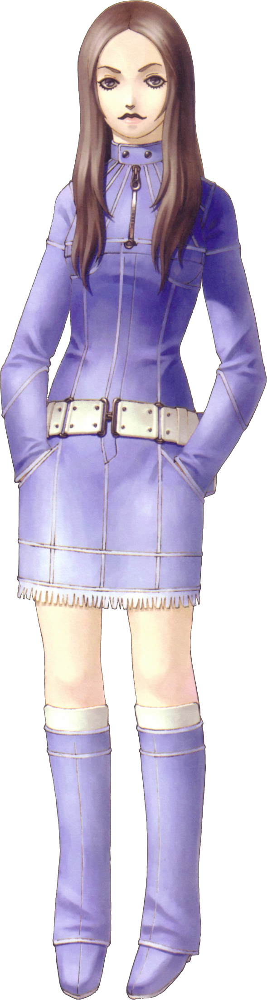
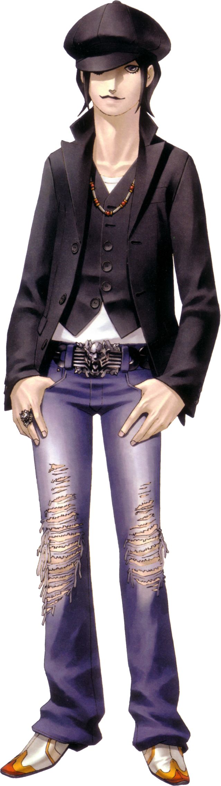
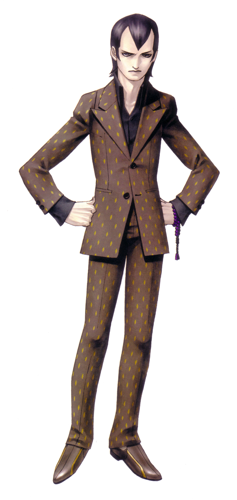
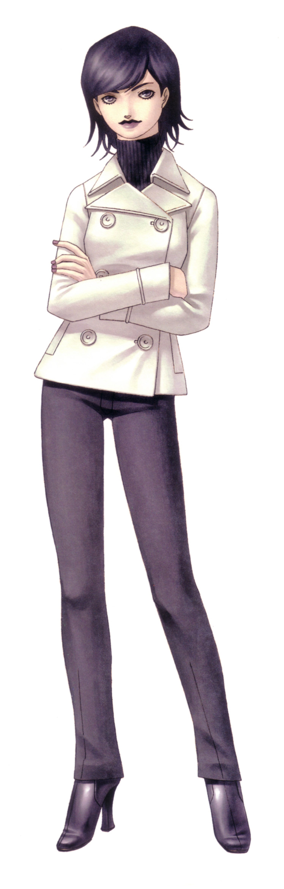
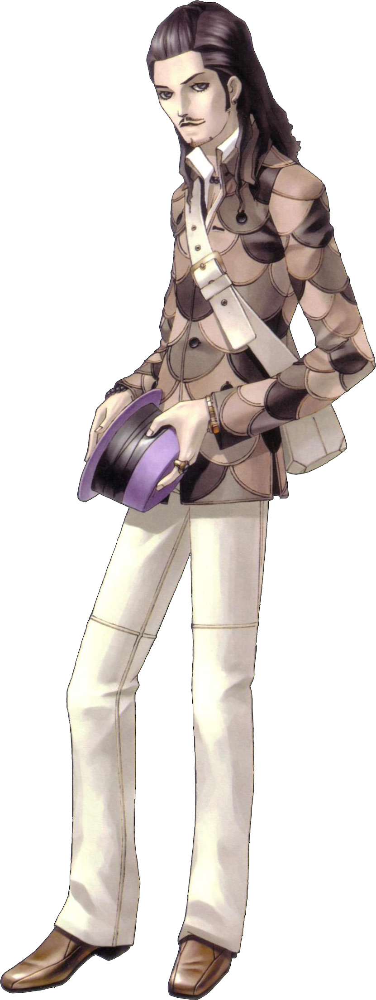
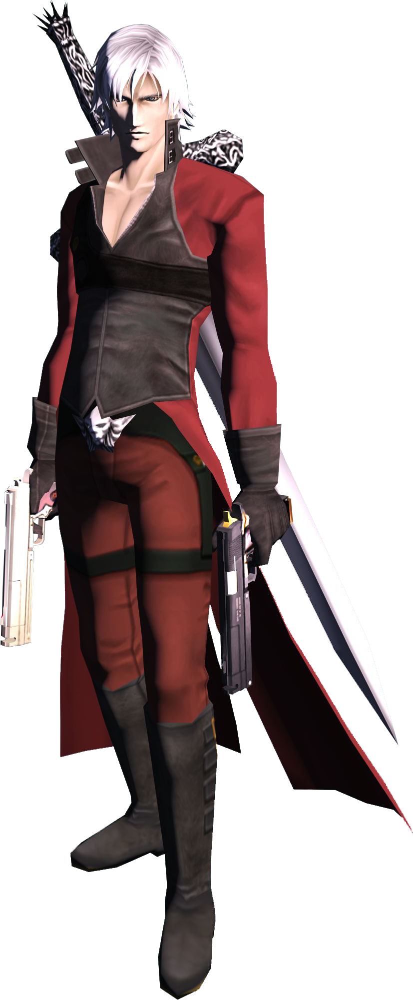
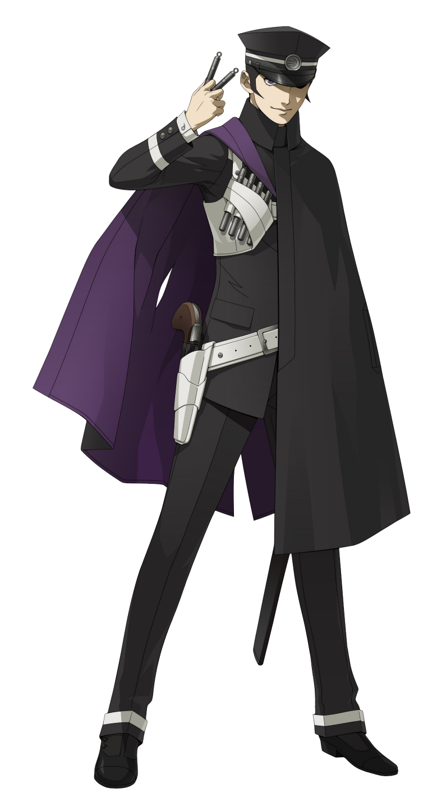

| Shin Megami Tensei III: Nocturne | |
|---|---|

|
|
| Nome original: | 真・女神転生III-NOCTURNE |
| Ano de lançamento: | 2003 no Japão e 2004 no Ocidente |
| Plataforma(s): | PlayStation 2 e PlayStation 3 |
Shin Megami Tensei III: Nocturne
Shin Megami Tensei III: Nocturne é o terceiro jogo numerado da série Shin Megami Tensei, tendo sido inicialmente lançado para o PlayStation 2. O cenário apresenta um mundo pós-apocalíptico infestado de demônios, que está à beira do renascimento; chamado de Concepção. Foi a primeira adição numerada à série Shin Megami tensei desde o lançamento original para Super Famicom de Shin Megami Tensei II quase uma década antes. Nocturne foi muito aguardado e obteve boas vendas após seu lançamento.
A Atlus eventualmente anunciou uma segunda versão de Nocturne, uma "Director's Cut" intitulada 真 ・ 女神 転 生 III-NOCTURNE マ ニ ア ク ス (Shin Megami Tensei III NOCTURNE MANIAKUSU), também conhecida como Maniax, que apresentou uma série de novas adições e ajustes. Esta versão foi usada para o lançamento na América do Norte, assim como nas regiões PAL (onde o jogo foi intitulado Shin Megami Tensei III: Lucifer's Call). A versão Maniax contava com Dante da série da Capcom, Devil May Cry, como um companheiro opcional, assim como um arco da história adicional.
Uma edição posterior, chamada de "Chronicle Edition", foi lançada com uma versão "plus" limitada de Devil Summoner: Kuzunoha Raidou vs. King Abbadon no Japão. Este lançamento contou com a participação de Raidou e seu companheiro felino Gouto no lugar de Dante.
Em 2020, um remaster em HD de Nocturne foi anunciado para Nintendo Switch e PlayStation 4. Este remaster parece ser baseado na "Chronicle Edition" do jogo, dada a participação de Raidou. Uma DLC foi anunciado em 12 de agosto de 2020, que restaura o conteúdo original de Dante e remove o de Raidou.
| Contents |
|---|
1. Plot
Em Shin Megami Tensei III: Nocturne, o jogador assume o papel de um jovem que é pego no apocalipse enquanto visitava seu professor doente, Yuko Takao, com seus dois colegas Chiaki Hayasaka e Isamu Nitta. O jogador deve sobreviver no Vortex World com os novos poderes e capacidades dados a ele através do Magatama obtido de Lúcifer. Com esses poderes, o jogador tem a oportunidade de se alinhar com uma Razão que decide o que o mundo vai se tornar.
2. Personagens






